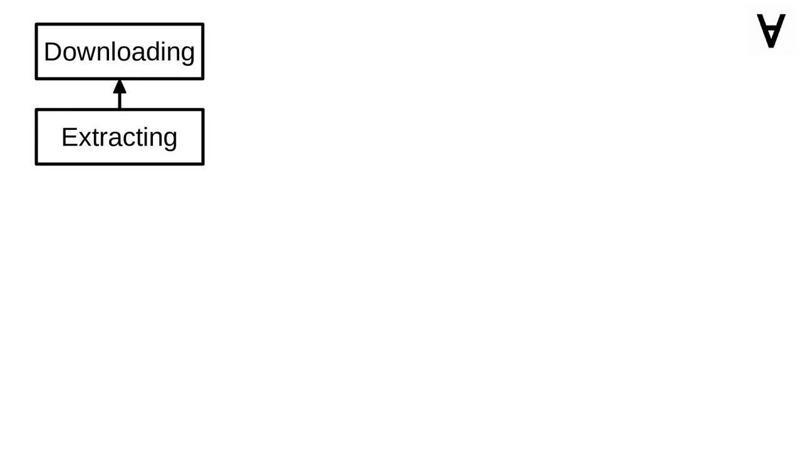

Numerai & ML - Part 5 - Automating with Luigi
By now I have a long list of models to explore and when considering running adversarial validation and t-SNE separately we have also some dependencies between the computational tasks.
I chose to organize the pipeline of the computational tasks with Luigi, the tasks will be running as Docker containers and to kick off the computation the data will be downloaded using the Numerai API.
Since Luigi will be running in a container and will be launching other containers the code needs to know the details of the volume through which the data will be shared.
Both the path of the volume on the host machine and inside the container is available...
...and it's also possible to automatically prefix a file name with the path of the data volume inside the container.
First task for Luigi pipeline will be to download the zipped training and tournament data using the Numerai API. Note that this task does not depend on any other and yields the zip file as an output.
Once the zipped data is downloaded the next task will be to extract it to the data volume. Note that the downloading task is given as a requirement.
Now that the data download & extraction are covered let's create a base class for any computing task. We will allow it to be retried 3 times, it will have the same volume bind as Luigi pipeline to share the data through, and it will be automatically removed once it's finished to preserve resources.
Let's have a look at one example computing task. You can see that it uses the Docker image created in one of the previous parts. It is given a suitable name and parameters via the environment variables. It also requires the task extracting the zip file to be finished. Also, the CSV file with predictions is the expected output.

Here's the dependency graph of the Luigi pipeline. As mentioned earlier - first, the training and tournament data is downloaded and extracted...
Once that's done, the following tasks are launched: SVM from the Tech in Pink blog, XGBoost and Deep Neural Network code found on GitHub as well as the models based on Auto-WEKA and auto-sklearn...
...at the same time the data is prepared through adversarial validation and then passed through t-SNE (see previous part for more information).
Once the t-SNE is done all the models introduced by Jim Fleming are launched.
The "Exploring" task is the single point of entry for the pipeline, hence, it lists all models as requirements.
The pipeline Docker container will need these three modules: docker (to launch the containers), luigi (to control the pipeline execution) and numerapi (to be able to download the data).
The Dockerfile is rather simple it installs the required modules, copies the Python code, and runs it as a Luigi pipeline.
To run the Docker container just use this command. Note that it assumes that the current directory is bound as a volume to store all the data. Make sure also to pass the second volume to let the pipeline launch Docker containers on the host machine.